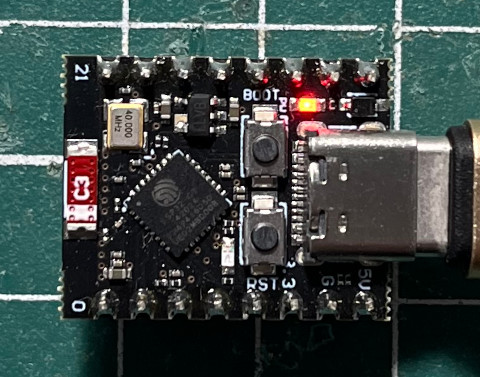
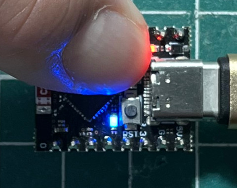

參考資訊：
https://arduino.github.io/arduino-cli/0.31/installation/
https://hutscape.com/tutorials/access-point-arduino-esp32c3
步驟如下：
1. 連接ESP32-C3 Super Mini到PC
2. 按住BOOT按鈕後，再按下RST按鈕，進入下載模式
3. 執行如下命令
$ cd $ arduino-cli sketch new blink $ vim blink/blink.ino
#define LED 8
#define BTN 9
void setup() {
pinMode(LED, OUTPUT);
pinMode(BTN, INPUT);
}
void loop() {
digitalWrite(LED, digitalRead(BTN) ? HIGH : LOW);
}
$ arduino-cli compile --fqbn esp32:esp32:esp32c3 blink
$ arduino-cli board list
Port Protocol Type Board Name FQBN Core
/dev/ttyACM0 serial Serial Port (USB) ESP32 Family Device esp32:esp32:esp32_family esp32:esp32
$ arduino-cli upload --port /dev/ttyACM0 --fqbn esp32:esp32:esp32c3 blink
esptool.py v4.6
Serial port /dev/ttyACM0
Connecting...
Chip is ESP32-C3 (revision v0.4)
Features: WiFi, BLE
Crystal is 40MHz
MAC: 24:ec:4a:ca:fc:e8
Uploading stub...
Running stub...
Stub running...
Changing baud rate to 921600
Changed.
Configuring flash size...
Flash will be erased from 0x00000000 to 0x00004fff...
Flash will be erased from 0x00008000 to 0x00008fff...
Flash will be erased from 0x0000e000 to 0x0000ffff...
Flash will be erased from 0x00010000 to 0x00052fff...
Compressed 18688 bytes to 12099...
Writing at 0x00000000... (100 %)
Wrote 18688 bytes (12099 compressed) at 0x00000000 in 0.3 seconds (effective 554.9 kbit/s)...
Hash of data verified.
Compressed 3072 bytes to 146...
Writing at 0x00008000... (100 %)
Wrote 3072 bytes (146 compressed) at 0x00008000 in 0.0 seconds (effective 539.2 kbit/s)...
Hash of data verified.
Compressed 8192 bytes to 47...
Writing at 0x0000e000... (100 %)
Wrote 8192 bytes (47 compressed) at 0x0000e000 in 0.1 seconds (effective 873.6 kbit/s)...
Hash of data verified.
Compressed 274128 bytes to 152398...
Writing at 0x00010000... (10 %)
Writing at 0x0001bebc... (20 %)
Writing at 0x00023e52... (30 %)
Writing at 0x0002aa46... (40 %)
Writing at 0x00030b25... (50 %)
Writing at 0x00036e97... (60 %)
Writing at 0x0003cbcc... (70 %)
Writing at 0x00043cc0... (80 %)
Writing at 0x0004a9ce... (90 %)
Writing at 0x00050dff... (100 %)
Wrote 274128 bytes (152398 compressed) at 0x00010000 in 2.1 seconds (effective 1028.4 kbit/s)...
Hash of data verified.
Leaving...
Hard resetting via RTS pin...
New upload port: /dev/ttyACM0 (serial)
完成

